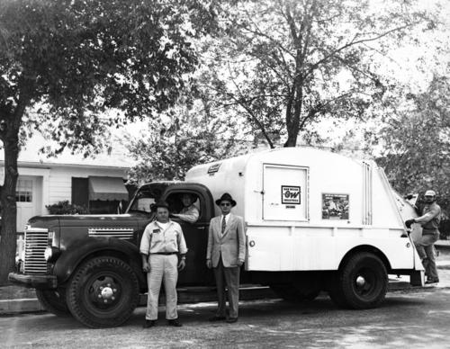

Our story
The Struggle of Our Founders
Our story began with the godfathers of our industry. Duston Binne and Garry Badge, the geniuses of trash collection, were regular sanitation workers in the 1960s in Memphis, Tennesse; They were amazing at their jobs and we ranked quite highly in their respective trash collecting leaderboard, but that all changed as demand and technological advancements progressed. Due to all of these new developments, as technology and consumption of it rised in usage, so did the quantity of trash without any new form of regulations or compensation for the sanitation workers of the day. What we call the "Trash Crash Incident" in which there was so much trash, that there were physically not enough man power to deal with it all, due to this Duston and Garry, along with many others, were forced to do a unhuman amount of hours without proper compensation.

Our Beginning
Everything began with "The Dumping Disaster Strike" in 1968. This massive strike from sanitation workers haulted all operations in the city and became politically involved, as there was so much chaos that the military had to become involved with the situation, as people were whipping the workers to get them to take out their trash, but our brave and valient founders stood their ground. But after days of striking, negotiations with the trash Dumping companies fell through, and our dwetermined workers had been laid off, these two brave pionneers were left out on the street and all they had was each other and their trash, only trash. But in a desperate but ingenious move, they tried selling their trash, in which they found their true calling, selling trash.
But of course, not everyone was buying, so their growth was limited at first, and they were only making so much profit to break even, but then they realized, the best way to resell trash is to buy trash at a much lower price to then resell it a massive profit!
Our dedication to our community
Ever since 1969, Trash Lovers LLC. has made a commitment to our community to buy their rabble, giving back to them and to of course give this to someomeone else of better need for these items. As they say, 'another man's trash is another man's treasure' at a reasonable price of course!